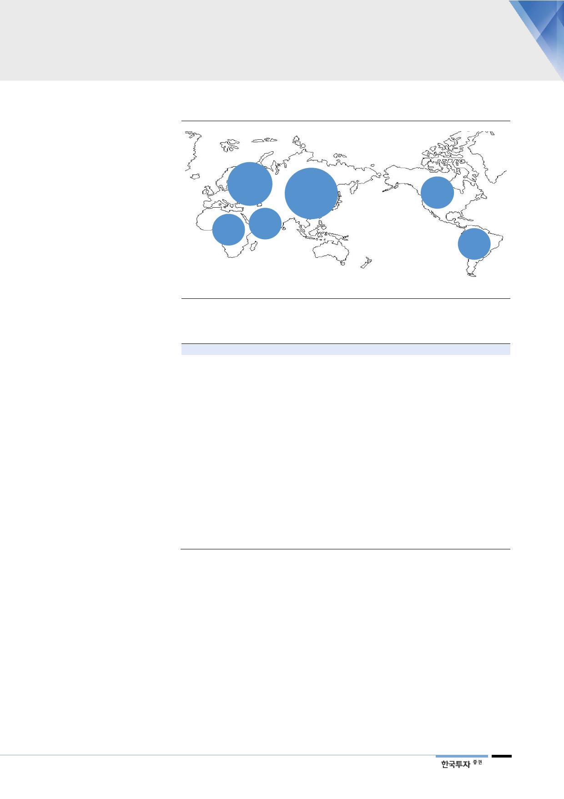

[그림 35] 건설 계획중인 원전 현황
유럽
48기
54.7GWe
아프리카
2기
2.4GWe
중동
8기
6.9GWe
아시아
72기
80.3GWe
북미
16기
4.6GWe
남미
2기
2.0GWe
일본은 원전 필요하다는
입장으로 선회
자료: WNA, 한국투자증권
<표 6> 중국의 2018년 이후 원전 건설 현황
원전
하이양 #1
산먼 #1
산먼 #2
타이산 #1
양장 #5
팡청강 #3
팡청강 #4
푸칭 #5
푸칭 #6
하이양 #2
홍옌허 #5
홍옌허 #6
시다오 베이 #1
타이산 #2
티안완 #4
티안완 #5
티안완 #6
양장 #6
준공시기
2009년 9월
2009년 4월
2009년 12월
2009년 11월
2013년 9월
2015년 12월
2016년 12월
2015년 5월
2015년 12월
2009년
2015년 3월
2015년 7월
2012년 12월
2010년 4월
2013년 9월
2015년 12월
2016년 9월
2013년 12월
자료: IAEA, 산업자료, 한국투자증권
가동(예정)시기
2018년 8월
2018년 6월
2018년 8월
2018년 6월
2018년 5월
2019년
2020년
2019년
2020년
2019년
2020년
2021년
-
2019년
2019년
-
-
2019년
운영업체
SNPC
SNPC
SNPC
TNPJVC
YNPC
GFNPC
GFNPC
CNNC
CNNC
SNPC
LHNPC
LHNPC
SHSNPC
TNPJVC
JNPC
JNPC
JNPC
YNPC
설비용량(MW)
1,250
1,250
1,250
1,750
1,086
1,180
1,180
1,150
1,150
1,250
1,119
1,119
211
1,750
1,126
1,118
1,118
1,086
원자력 발전을 축소하려던 국가들도 당초 계획보다 속도를 늦추고 있다. 한때 원
전가동을 전면 중단했던 일본은 2012년 정권 교체와 맞물려 다시 원전의 필요성
을 인정하는 방향으로 선회했다. 2015년 8월 센다이 1호기의 재가동을 시작으로
현재까지 9기의 원전이 운전을 재개했다. 추가적으로 3기의 재가동이 예정되어
있으며 현재 13기는 강화된 안전규정에 따른 적합성 심사를 받고 있다. 올해 3월
확정된 5차 에너지 기본계획에서는 2030년까지 원자력 발전비중을 20~22%로
회복시키는 계획을 유지했다. 이는 2011년 후쿠시마 원전사고 이전 수준이며, 현
재는 2%에 불과하다. 향후 30기 수준의 원전이 재가동될 것으로 예상된다.
17